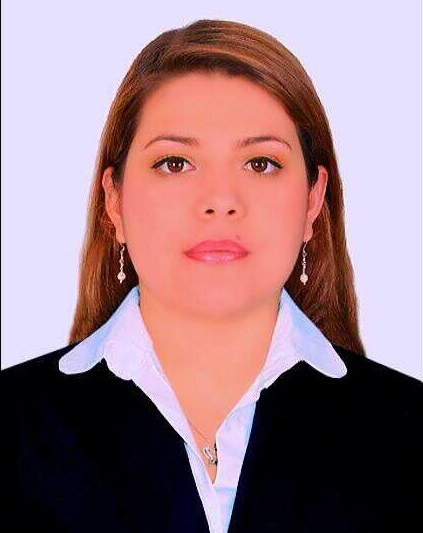

CURRICULUM VITAE DE LAURA XIMENA SALAZAR CIENDUA
DATOS PERSONALES
-
Nombre completo:
Laura Ximena Salazar Ciendua
-
Fecha de nacimiento:
01/08/1990
-
Lugar de nacimiento:
Santiago de Cali - Colombia
FORMACIÓN ACADÉMICA
2021:
- Digital House - Certified Tech Developer (actualmente cursando)
2014:
- Institucion Universitaria Escuela Nacional del Deporte
2007:
- Colegio San Antonio Maria Claret
EXPERIENCIA LABORAL
2017-2021:
- Fisioterapeuta (Laborando actualmente)
- Clinica Imbanaco
2015-2016:
- Fisioterapeuta
- Clinica San Francisco
2013-2015:
- Fisioterapeuta Deportiva
- Indervalle